Notation
I use the following conventional notation in this book.
Math
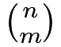 |
“ choose choose  ” which equals ” which equals 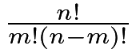 |
|---|---|
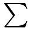 |
summation, e.g., 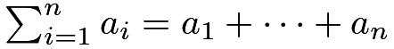 |
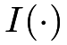 |
indicator function, i.e., 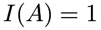 if happens and 0 otherwise happens and 0 otherwise |
| counting the number of units in a set | |
 |
approximately equal |
 |
proportional to (by dropping some unimportant constant) |
| logit | 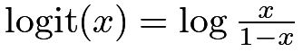 |
| expit | 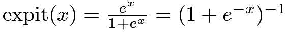 |
Basic probability and statistics
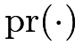 |
probability |
|---|---|
 |
expectation of a random variable |
 |
variance of a random variable |
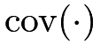 |
covariance between random variables |
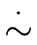 |
“ 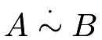 ” means that and  have the same asymptotic distribution have the same asymptotic distribution |
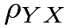 |
Pearson correlation coefficient between  and and  |
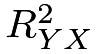 |
squared multiple correlation coefficient between and |
Random variables
| Bernoulli 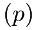 |
Bernoulli distribution with probability  |
|---|---|
| Binomial 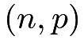 |
Binomial distribution with trials and probability |
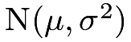 |
Normal distribution with mean  and variance and variance 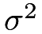 |
 |
 distribution with degrees of freedom distribution with degrees of freedom  |
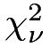 |
chi-squared distribution with degrees of freedom |
 |
the  upper quantile of upper quantile of  , e.g., , e.g., 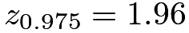 |
Causal inference
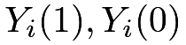 |
potential outcomes of unit  under treatment and control under treatment and control |
|---|---|
 |
finite-population average causal effect 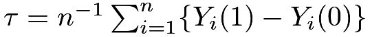 |
|
super-population average causal effect  |
 |
outcome model 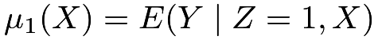 |
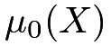 |
outcome model 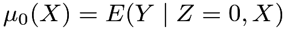 |
 |
propensity score  |
 |
complier average causal effect 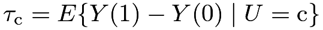 |
 |
unmeasured confounder |
|
latent compliance status 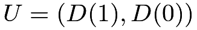 |
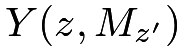 |
nested potential outcome (for mediation analysis) |